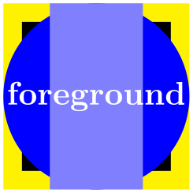

The TikZ and PGF Packages
Manual for version 3.1.10
The Basic Layer
113 Layered Graphics¶
113.1 Overview¶
pgf provides a layering mechanism for composing graphics from multiple layers. (This mechanism is not to be confused with the conceptual “software layers” the pgf system is composed of.) Layers are often used in graphic programs. The idea is that you can draw on the different layers in any order. So you might start drawing something on the “background” layer, then something on the “foreground” layer, then something on the “middle” layer, and then something on the background layer once more, and so on. At the end, no matter in which ordering you drew on the different layers, the layers are “stacked on top of each other” in a fixed ordering to produce the final picture. Thus, anything drawn on the middle layer would come on top of everything of the background layer.
Normally, you do not need to use different layers since you will have little trouble “ordering” your graphic commands in such a way that layers are superfluous. However, in certain situations you only “know” what you should draw behind something else after the “something else” has been drawn.
For example, suppose you wish to draw a yellow background behind your picture. The background should be as large as the bounding box of the picture, plus a little border. If you know the size of the bounding box of the picture at its beginning, this is easy to accomplish. However, in general this is not the case and you need to create a “background” layer in addition to the standard “main” layer. Then, at the end of the picture, when the bounding box has been established, you can add a rectangle of the appropriate size to the picture.
113.2 Declaring Layers¶
In pgf layers are referenced using names. The standard layer, which is a bit special in certain ways, is called main. If nothing else is specified, all graphic commands are added to the main layer. You can declare a new layer using the following command:
-
\pgfdeclarelayer{⟨name⟩} ¶
This command declares a layer named ⟨name⟩ for later use. Mainly, this will set up some internal bookkeeping.
The next step toward using a layer is to tell pgf which layers will be part of the actual picture and which will be their ordering. Thus, it is possible to have more layers declared than are actually used.
-
\pgfsetlayers{⟨layer list⟩} ¶
This command tells pgf which layers will be used in pictures. They are stacked on top of each other in the order given. The layer main should always be part of the list. Here is an example:
\pgfdeclarelayer{background}
\pgfdeclarelayer{foreground}
\pgfsetlayers{background,main,foreground}
This command should be given either outside of any picture or “directly inside” of a picture. Here, the “directly inside” means that there should be no further level of TeX grouping between \pgfsetlayers and the matching \end{pgfpicture} (no closing braces, no \end{...}). It will also work if \pgfsetlayers is provided before \end{tikzpicture} (with similar restrictions).
113.3 Using Layers¶
Once the layers of your picture have been declared, you can start to “fill” them. As said before, all graphics commands are normally added to the main layer. Using the {pgfonlayer} environment, you can tell pgf that certain commands should, instead, be added to the given layer.
-
\begin{pgfonlayer}{⟨layer name⟩} ¶
-
⟨environment contents⟩
-
\end{pgfonlayer}
The whole ⟨environment contents⟩ is added to the layer with the name ⟨layer name⟩. This environment can be used anywhere inside a picture. Thus, even if it is used inside a {pgfscope} or a TeX group, the contents will still be added to the “whole” picture. Using this environment multiple times inside the same picture will cause the ⟨environment contents⟩ to accumulate.
Note: You can not add anything to the main layer using this environment. The only way to add anything to the main layer is to give graphic commands outside all {pgfonlayer} environments.

\pgfdeclarelayer{background
layer}
\pgfdeclarelayer{foreground
layer}
\pgfsetlayers{background
layer,main,foreground
layer}
\begin{tikzpicture}
% On main layer:
\fill[blue] (0,0) circle
(1cm);
\begin{pgfonlayer}{background
layer}
\fill[yellow] (-1,-1) rectangle
(1,1);
\end{pgfonlayer}
\begin{pgfonlayer}{foreground
layer}
\node[white] {foreground};
\end{pgfonlayer}
\begin{pgfonlayer}{background
layer}
\fill[black] (-.8,-.8) rectangle
(.8,.8);
\end{pgfonlayer}
% On main layer again:
\fill[blue!50] (-.5,-1) rectangle
(.5,1);
\end{tikzpicture}
-
\pgfonlayer{⟨layer name⟩}
-
⟨environment contents⟩
-
\endpgfonlayer
This is the plain TeX version of the environment.
-
\startpgfonlayer{⟨layer name⟩}
-
⟨environment contents⟩
-
\stoppgfonlayer
This is the ConTeXt version of the environment.